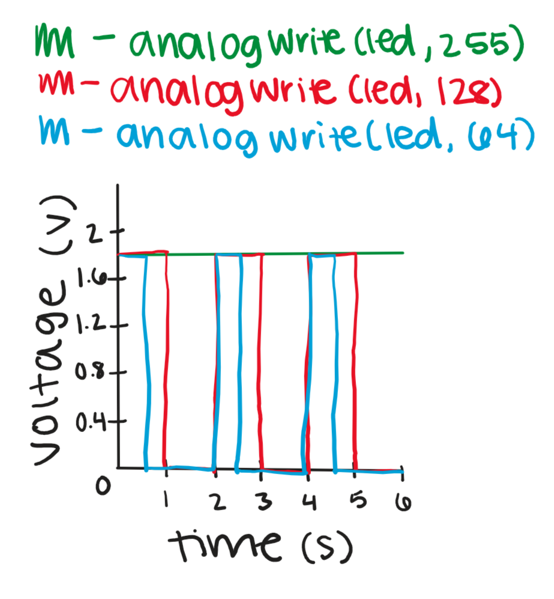

For this assignment, I used 4 LEDs (2 of which are combined in a RGB LED) and a pushbutton. The 2 individual LEDs (blue and red) turn on at the beginning and stay on the whole time, while the button controls the RGB LEDs. The RGB LED alternates fades between red and blue each time the button is pressed.
max voltage: 5 V
max current: 0.02 A
V = I × R
voltage drop: 1.8 V
5 V - 1.8 V = 3.2 V
3.2 V = 0.02 A × R
3.2 V / 0.02 A = R
voltage drop: 3.3 V
5 V - 3.3 V = 1.7 V
1.7 V = 0.02 A × R
1.7 V / 0.02 A = R
I used a 220 Ω resistor for the red LEDs and 100 Ω resistors for the blue LEDs because those were the closest resistor values I had to the calculations.
For the button, I used a 10K Ω resistor because that is what we used in class to make sure it was a good balance and it wasn't too high or too low.
// to keep track of whether or not button is pressed
int buttonState = LOW;
// to keep track of which color is on in the multicolored LED
bool ledRed = false;
// run once at the start
void setup() {
// set pin 10 (connected to blue LED) as an output
pinMode(10, OUTPUT);
// set pin 9 (connected to red LED in the multicolored LED) as an output
pinMode(9, OUTPUT);
// set pin 6 (connected to blue LED in the multicolored LED) as an output
pinMode(6, OUTPUT);
// set pin 5 (connected to red LED) as an output
pinMode(5, OUTPUT);
// set pin 2 (connected to button) as an input
pinMode(2, INPUT);
// turn on pin 6 (connected to blue LED in the multicolored LED) so that the multicolored LED is blue
analogWrite(6, 255);
// set ledRed to false (mulitcolored LED is blue)
ledRed = false;
// set pin 10 (connected to blue LED) to on (5 V)
digitalWrite(10, HIGH);
// set pin 5 (connected to red LED) to on (5 V)
digitalWrite(5, HIGH);
}
// loop infinitely
void loop() {
// read pin 2 (connected to the button) to determine if the button is pressed
buttonState = digitalRead(2);
// check if buttonState is HIGH (button is pressed)
if (buttonState == HIGH) {
// check if ledRed is false (multicolored LED is blue)
if (ledRed == false) {
// iterate 256 times (0 to 255 inclusive; intervals of 1)
for (int i = 0; i <= 255; i++) {
// increase pin 9 (connected to red LED in multicolored LED) by 1
analogWrite(9, i);
// decrease pin 6 (connected to blue LED in multicolored LED) by 1
analogWrite(6, 255 - i);
// wait 10 miliseconds before looping again
delay(10);
}
// set ledRed to true (multicolored LED is now red)
ledRed = true;
// otherwise, ledRed is true (multicolored LED is red)
} else {
// iterate 256 times (0 to 255 inclusive; intervals of 1)
for (int i = 255; i >= 0; i--) {
// decrease pin 9 (connected to red LED in multicolored LED) by 1
analogWrite(9, i);
// increase pin 6 (connected to blue LED in multicolored LED) by 1
analogWrite(6, 255 - i);
// wait 10 miliseconds before looping again
delay(10);
}
// set ledRed to false (multicolored LED is now blue)
ledRed = false;
}
}
}This graph represents the voltage across a red, yellow, or green LED, which, using the correct resistor, should have about 1.8 V the whole time when it is fully on (analogWrite(led, 255), 100% duty cycle). The voltage using analogWrite(led, 128) should be 1.8 V for 50% of the time (50% duty cycle), and the voltage using analogWrite(led, 64) should be 1.8 V for 25% of the time (25% duty cycle).
Each pin has max 20 mA.
Pin 10 and 5 are constant (LEDs are always on), so each max is 20 mA.
Pin 9 and 6 alternate (fade), so combined max is 20 mA.
When button is pressed, 20 mA is supplied from the 5 V pin.
Pin 2 is not an output so it doesn't supply any current.
Total current supplied with button pressed: 20 + 20 + 20 + 20 = 80 mA.
1200 mAh / 80 mA = 15 h
Assuming the button is always pressed, and the pins are supplying the max current, the battery would last
I measured a blue LED and it measured at around